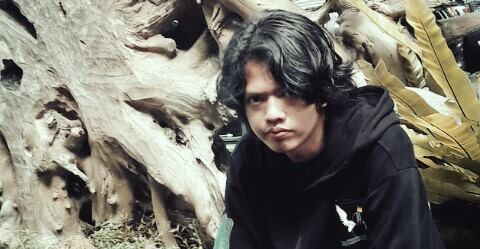

Tentang

Nama: Sepri Panjaitan
NIM:151351212
Kelas: MALAM B
Saya Lahir di Lampung, 08 September 1997. Saya adalah anak ketiga dari empat bersaudara.Saya hobi bermain game online dan badminton. Saya sekarang bekerja di bidang otomotif di karawang dan tinggal di Purwakarta. Terimakasih.